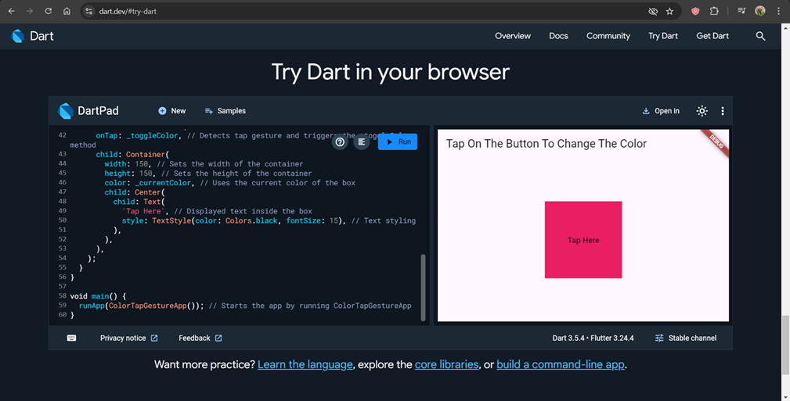
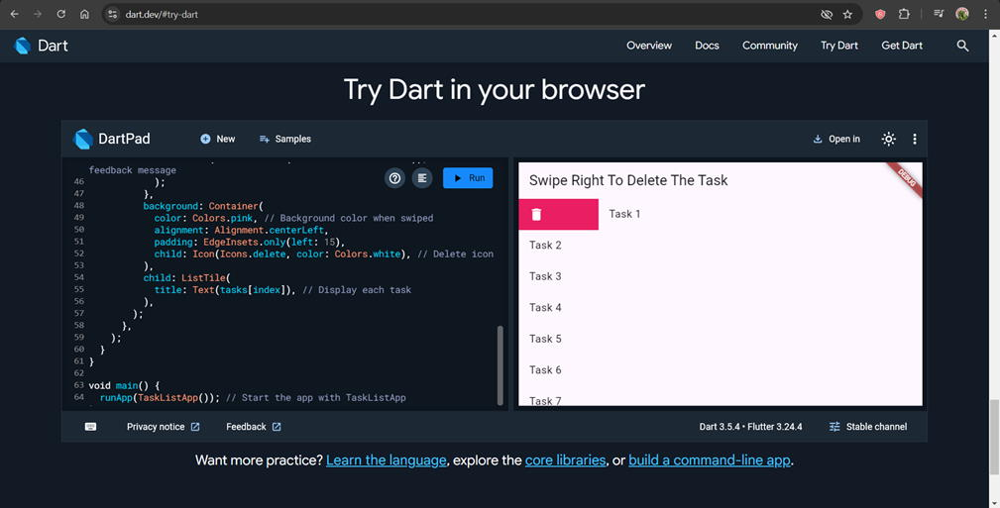

Flutter Gesture Handling
This lab focused on exploring the concept of gesture handling in Flutter, including its implementation, advantages, and challenges. Gesture handling enables apps to respond to touch movements such as taps, swipes, and drags, improving interactivity and user experience.
Key Topics Covered:
- Definition and importance of gestures in mobile app development.
- Comparison of gesture handling in Flutter vs. React Native.
- Advantages and disadvantages of gesture handling in Flutter.
Key Highlights:
-
Advantages: Reduced UI clutter, enhanced user experience, and cross-platform flexibility using Flutter’s
GestureDetector. - Disadvantages: Performance concerns on older devices, learning curve for advanced gestures, and potential compatibility issues with device sensitivity.
Interesting Insight: A real-world application scenario demonstrated how gestures can enhance user engagement in apps such as image galleries, e-commerce platforms, and interactive content viewers.
Example Implementation: Two practical code examples were explored during the lab:
- Implementing tap gestures to navigate between screens. 
- Using swipe gestures to delete or modify content dynamically. 
Impact: This lab provided hands-on experience with Flutter’s gesture handling, highlighting its role in developing user-friendly and visually engaging mobile applications.